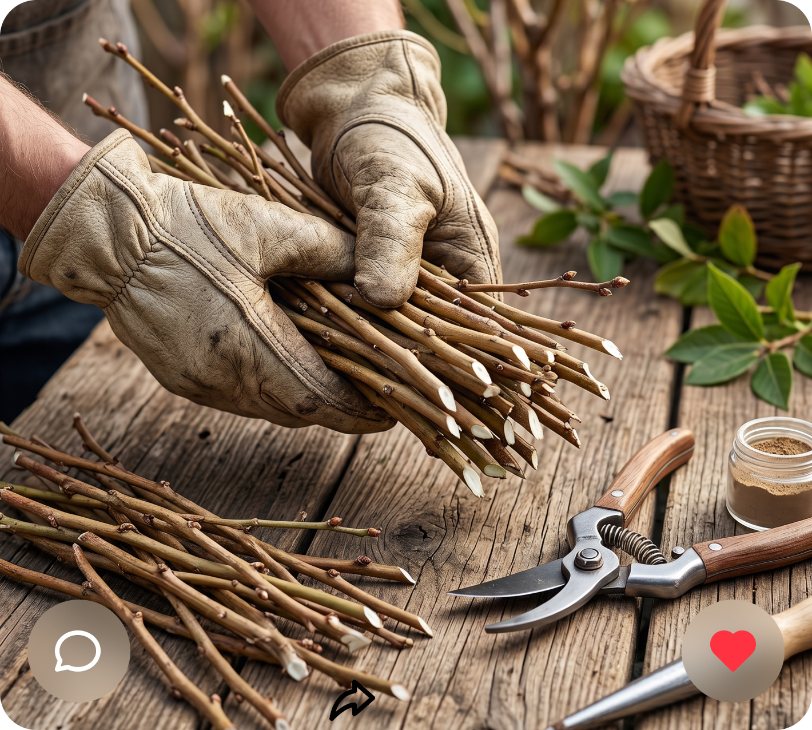

rootberry

rootberry: Нарезаем одревесневшие побеги зимой — 10–15 см, 2–3 почки

Дорогие саженцы часто больны, а свои черенки почти всегда гниют

>1 000 ₽/куст
за импортные саженцы
Черенки
без тумана не дают корней
Наглядно показываем, как просто посадить черенок и не потерять его

rootberry: Нарезаем одревесневшие побеги зимой — 10–15 см, 2–3 почки

rootberry: Сажаем в смесь торфа с песком (3:1), обрабатываем стимулятором корнеобразования

rootberry: Через 3–4 месяца в парнике при температуре 23–26 °C появляются корни
Дёшево, просто и работает даже у новичков — без туманообразующих систем и тысяч рублей
до 90%
приживаемости
от 50 ₽
себестоимость саженца
без специального оборудования
Всем, кто хочет свои саженцы без лишних затрат
для дома и дачи

для малого бизнеса

для разведения и продажи
Хотите первыми узнать о запуске, задать вопрос или просто поддержать идею?
Написать нам